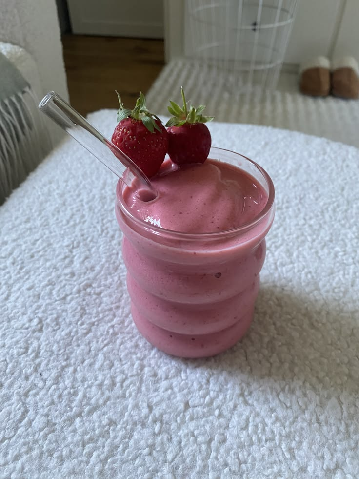

How to Make a Strawberry Smoothie
This is a simple recipe for a fresh strawberry smoothie.

Ingredients
- 1 cup strawberries
- 1 banana
- 1/2 cup milk
- 1 teaspoon honey
- Ice
Instructions
- Wash the strawberries.
- Cut the strawberries and banana into small pieces.
- Put all the ingredients into a blender.
- Blend until smooth.
- Pour the smoothie into a glass.
- Enjoy!